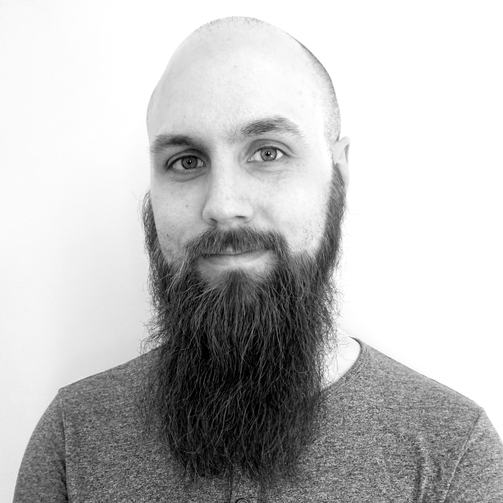

Kort om mig
Erik Grundström heter jag. Jag är till störst del självlärd programmerare som söker efter nya utmaningar. Jag har programmerat på hobbynivå i ett par år nu börjar nu känna att min kompetens räcker till för att börja arbeta professionellt som junior utvecklare.
Min väg in i programmeringens värld är något krokig och man kan väl säga att den började under sista året som jag studerade ljudteknik vid musikhögskolan i Piteå. Där läste jag en kurs som hette Programmering inom ljudområdet. Den kursen var i grund och botten en snabb introduktion till C++ och programmering med enkla applikationer mot ljudprogrammering. Målet med kursen var aldrig att bli programmerare utan att få en fördjupad förståelse för hur digitalt ljud fungerar.
Man kan väl säga att jag fick blodad tand på programmering i och med den kursen. Idag spenderar jag den mesta av min fritid med att experimentera med, och skriva kod. Jag har ett tydligt mål om att hitta ett jobb som programmerare inom en snar framtid och hoppas att jag får chansen på Tromb
Vad jag kan
-
HTML
Jag känner mig bekväm och skriver obehindrat HTML5 kod. Jag försöker att hålla mig till helt semantisk HTML men ibland kan man tvingas till att ändå använda divs eller spans till annat än att gruppera saker. Visst, varken divs eller
-
CSS
-
Javascript
-
Python
Python är mitt favoritspråk att koda i. Några av anledningarna är:
- Ekosystemet
- Inbyggda package-managern (pip)
- Virtual environments (venv)
- Rent av vacker syntax
- Snabbt och lättjobbat
När det kommer till webb och back end så har jag provat på både Django och Flask och föredrar än så länge Django. Jag gillar att Django är ett helt komplett ramverk så att man inte behöver mixa och matcha. Å andra sidan kan Flask vara bättre i vissa sammanhang om man inte behöver en fullfjädrad back-end med databas och massor med server-side templating.
Jag kodar endast i Python 3 och ser ingen som helst anledning att göra något i python 2 år 2019. Kanske framförallt eftersom EOL för Python 2 är 1/1 2020 och inga fler uppdateringar, inte ens säkerhetsfixar, kommer att komma till det. Även det faktum att fler och fler ramverk och bibliotek avslutar sitt stöd för Python 2, prestandan är sämre, och det saknar många features som Python 3 har, bidrar.
-
C++
C++ är där min programmeringsresa började. På nåt sätt känns det nästan lite som att komma hem när jag skriver C++ kod. Dock ska jag säga att mina C++-chops är ganska rostiga vid det här laget, det blir mest python och webb nuförtiden. Har använt en del C++11 men har väldigt dålig koll på C++17 ska jag villigt erkänna. Grunden sitter dock där och tycker jag har hyfsat koll på pekare,type-casting,
Kod
-
Datavetenskap
Eftersom mina datavetenskapliga grundkunskaper kommer från universitetskurser så känner jag att jag har en ganska stabil grund som jag står på. Jag gillar även att läsa om datavetenskap och min absoluta favoritkanal på Youtube är Computerphile
-
Datastrukturer
Jag är bekant med en del av dom vanligaste (och viktigaste?) datastrukturerna som lists, queues, stacks och trees. Jag kan resonera kring olika tradeoffs med dom olika datastrukturerna och anser mig ha vissa färdigheter i att välja ett lämpligt alternativ för olika användningsområden.
Vissa av datastrukturerna har jag även implementerat i kod, vissa i Python och vissa i C++. I Python har jag bland annat implementerat ett parse-tree för matematiska beräkningar av godtycklig längd med korrekt operator prioritet, inklusive parenteser. I C++ har jag implementerat några av "låg-nivå" strukturerna som listor, double-ended queues, och stacks. Visserligen pratar vi hyfsat naiva implementationer utan överdrivet robusta kontroller och felskydd men jag skulle nog säga att det ändå visar på förståelse för hur strukturerna fungerar bakom kulisserna.
-
Algoritmer
Jag har grundförståelse för en del av dom vanliga standard-algoritmerna som ofta används inom datavetenskap. Jag har implementerat dom vanligaste sorteringsalgoritmerna i C++, som insertion-sort, selection-sort, quick-sort merge-sort och självklart den absolut bästa sorteringsalgoritmen någonsin: bubble-sort...
Big O notation och komplexitet förstår jag och kan i viss mån resonera mig fram till, även om jag inte riktigt har koll på matematiken för att formellt beräkna dessa. Fast då är jag ju framförallt självlärd och har ingen Master-examen i datavetenskap eller likanande så det är väl kanske ok ändå. Jag förstår vad som är rimliga nivåer att ligga på för olika algoritmer och kan resonera kring hur både tids- och minneskomplexitet kan påverka min egen kod.
-
Designmönster
Även designmönster är jag bekant med. Singleton, Factory, Wrapper, Adapter, Interface, MVC, Observer osv. Vissa har jag använt i egen kod, vissa har jag indirekt använt genom ramverk som exempelvis Django, och vissa känner jag till i teorin och förstår hur dom fungerar samt deras användningsområden.
-
Arbetsmetoder
Jag är bekant med Test-driven utveckling och har testat det i en del av mina experiment. Jag förstår helt klart värdet av att arbeta med en "test-first" metodologi för att säkerställa att koden blir robust och korrekt. Självklart innebär detta att jag är bekant med unit-testing även om jag inte alltid har disciplinen att implementera detta så mycket som jag borde. Eftersom jag för det mesta kodat på egen hand och inte har så stor erfarenhet av större mjukvaruprojekt kan jag också känna att det kan vara svårt att ha arkitekturen så pass klar att det blir enkelt att skriva unit-tests. Däremot så försöker jag, även om jag inte alltid använder automatiserade tester, att hålla en ganska tight itereringsloop mellan att skriva kod och att testa. Detta är superviktigt för att upptäcka buggar tidigt och se att man faktiskt skriver kod som tar projektet i rätt riktning.
Eftersom jag aldrig har jobbat med programmering i team så ska jag erkänna att agila metoder som Scrum eller Kanban känner jag i princip bara till i teorin. Jag vill dock gärna lära mig att arbeta enligt dessa metoder.
Teori
Hårdvara
När det kommer till nya datorer så är halva nöjet att sätta ihop burken själv. Framförallt sitter jag på en stationär burk, helt enkelt eftersom prestanda/kr är högre för dessa. Är man även en gamer så är ju en stationär mer eller mindre ett måste, eller hur? Mitt senaste bygge är en Ryzen 7 2700x på ett X470 chipset med DDR4 RAM överklockat till 3400MHz. Valde att köra på Nvidia 1070 som GPU för denna. Med andra ord, att hålla på att pilla på hårdvaran tycker jag är kul.
Jag har även en del förståelse för vad det är som faktiskt händer inuti hårdvaran, jag förstår transistorer, integrerade kretsar, och logiska grindar vilka är själva fundamentet som datorer bygger på.
Formellt CV
Utbildning
Programvaruteknik - Mittuniversitetet 2013-2014
- Datavetenskap
- Operativsystem
- C++
- Procedurell och objektorienterad programmering
- IT-säkerhet
- Matematik
Ljudteknik fil. kand. - Luleå Tekniska Universitet 2010 - 2013
Som jag skrev tidigare innehöll den här utbildningen den kurs som gjorde mig förälskad i kod. Jag fick även möjlighet att utnyttja en del programmering i mitt ex-jobb där jag undersökte om det gör någon skillnad att använda 64-bitars floating-point, dvs double precision, inuti ljudmjukvara mot 32-bitar, single-precision floats. Kort och gott: Är målet 16-bitar så duger 32 men om målet är 24-bitar, vilket det ofta är innan ett musikprojekt når slutprodukten, så ger 32-bitar tillräckligt med avrundningsfel för att påverka slutresultatet. Jag skrev kod för att kunna testa detta i C++.
- Musikinspelning
- Ljudredigering
- Digital ljudteknik (teori)
- Ljudläggning i film
- Direktsändning i TV och Radio
- Grundläggande elektronik
Övrigt
- Psykologi
- Statistik
- Programmering
Fristående kurser
Arbetslivserfarenhet
Ica Kvantum Piteå 2015 - Nu
Jag är idag ansvarig för frukt och grönt avdelningen. Sedan jag blev ansvarig på avdelningen har jag tagit fram en introduktionsplan för nya medarbetare
Sveriges Radio 2012 - 2013
Arbetade extra och vik som ljudtekniker. Arbete innefattade bland annat:
- Direktsändning från studio
- Direktsänding över IP-upplänk
- Inspelning
- Ljudredigering
- Felsökning
- IT-stöd till reportrar